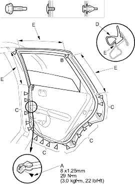
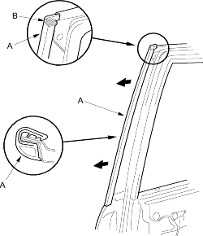

- Take care not to scratch the door.
- Use a clip remover to remove the clips.
- At the centre pillar, remove the door stop mounting bolt (A).
Fastener Location A  : Bolt, 1
: Bolt, 1B  : Clip, 1
: Clip, 1C : Clip, 17

- Detach the clips (C), and pull out the door weatherstrip (D) from the holder areas (E), then remove it.
- Install the weatherstrip in the reverse order of removal and note these items:
- Replace any damaged clips.
- Make sure the weatherstrip is installed in the holder (F) securely.
- Apply liquid thread lock to the door stop mounting bolt before installation.
- Check for water leaks (see step 7 on page 20-163).
- Pull out the door centre seal (A), then remove it.

- Clean the top edge of the door with a sponge dampened in alcohol.
- Apply clear sealant (B) (Cemedine P/N 08712-0004, or equivalent) to the into the top edge of the seal as shown.
- Align the seal with the top edge of the door, then install the seal securely.